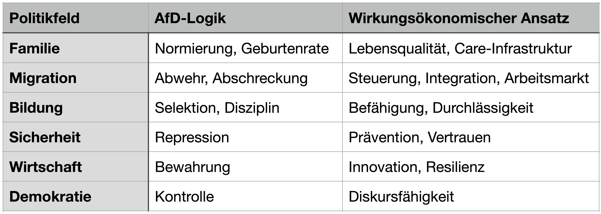

1 | Einleitung - Warum dieses Programm eine Wirkungsanalyse braucht
Mit dem vorliegenden Entwurf eines AfD-Regierungsprogramms für Sachsen-Anhalt 2026 liegt erstmals ein Dokument vor, das nicht nur politische Positionen formuliert, sondern einen tiefgreifenden Umbau staatlicher, gesellschaftlicher und institutioneller Strukturen ankündigt. Genau deshalb reicht eine klassische politische oder ideologische Einordnung nicht aus.
Was hier erforderlich ist, ist eine Wirkungsanalyse.
Denn Politik ist kein Meinungsaufsatz, sondern ein Interventionsprogramm in komplexe Systeme: in Gesellschaften, Ökosysteme, Märkte, Bildungswege, Demokratien. Jede Maßnahme entfaltet beabsichtigte und unbeabsichtigte Wirkungen - kurzfristig, langfristig, direkt und indirekt.
Dieser Artikel nimmt das AfD-Programm daher nicht moralisch, nicht parteipolitisch und nicht rhetorisch auseinander, sondern:
wirkungsökonomisch.
Warum Wirkungsökonomie der richtige Maßstab ist
Die Wirkungsökonomie stellt eine einfache, aber konsequente Frage:
Was bewirken politische Entscheidungen real - für Menschen, für den Planeten und für die demokratische Stabilität?
Dabei geht es nicht um Gesinnung, sondern um:
Kausalität (Was folgt woraus?)
Systemeffekte (Was passiert im Gesamtsystem?)
Rückkopplungen (Welche Effekte verstärken oder unterminieren sich selbst?)
Resilienz (Macht eine Maßnahme Gesellschaften stabiler oder fragiler?)
Die drei zentralen Wirkungsdimensionen dieser Analyse sind daher:
Wirkung auf den Menschen (Wohlstand, Teilhabe, Sicherheit, Bildung, Gesundheit, Freiheit)
Wirkung auf den Planeten (Ressourcenverbrauch, Emissionen, Biodiversität, Langfriststabilität)
Wirkung auf die Demokratie (Rechtsstaatlichkeit, Gewaltenteilung, Diskursfähigkeit, institutionelle Robustheit)
Was dieser Artikel leistet - und was nicht
Dieser Beitrag ist keine Wahlkampfrede, keine moralische Abrechnung und kein Alarmismus. Er ist ein systematischer Wirkungs-Check eines Regierungsprogramms.
Konkret bedeutet das:
Jede zentrale Programmaussage wird entlang ihrer Wirkungspfade analysiert
Zielbehauptungen werden von realistischen Wirkungen getrennt
Neben- und Rückwirkungen werden explizit benannt
Widersprüche zwischen Anspruch und Wirkung werden offengelegt
Und ja: Wo Wirkungen nachweislich destruktiv, destabilisierend oder inkonsistent sind, wird das klar benannt - begründet, nicht polemisch.
Warum diese Analyse gerade jetzt notwendig ist
Programme wie dieses markieren einen Paradigmenwechsel: weg von Wirkungsorientierung, hin zu Identität, Abgrenzung und Kontrolle als politische Steuerungslogik.
Die zentrale Frage lautet daher nicht:
„Gefällt uns das politisch?“
sondern:
„Trägt dieses Programm zur Lösung realer Probleme bei - oder verschärft es sie systemisch?“
Genau dieser Frage widmen sich die folgenden Kapitel - Punkt für Punkt, Kapitel für Kapitel.
2 | Das Programm im Überblick - Struktur, Logik und implizite Annahmen
Bevor einzelne Maßnahmen bewertet werden können, muss geklärt werden, was für ein Dokument dieses Programm überhaupt ist - und welcher Steuerungslogik es folgt.
Der vorliegende Entwurf des AfD-Regierungsprogramms für Sachsen-Anhalt (Stand: Januar 2026, ca. 150+ Seiten) ist kein klassisches Wahlprogramm, das punktuell Versprechen formuliert. Es ist vielmehr als umfassender Regierungs- und Umbauplan angelegt, der nahezu alle staatlichen Handlungsfelder neu ordnen will.
Das ist entscheidend für die Wirkungsanalyse.
2.1 Aufbau und formale Struktur
Das Programm ist thematisch gegliedert und deckt u. a. folgende Bereiche ab:
Familie, Kinder, Demografie
Migration, Asyl, Remigration
Kultur, Identität, politische Bildung
Schule, Wissenschaft, Hochschulen
Innere Sicherheit, Justiz, Staatsaufbau
Demokratie, Medien, Zivilgesellschaft
Wirtschaft, Energie, Landwirtschaft
Formal wirkt das Programm zunächst kohärent, ausführlich und handlungsorientiert. Es benennt Probleme, formuliert Zielbilder und leitet daraus Maßnahmen ab.
Doch genau hier beginnt die wirkungsökonomische Fragestellung:
Welche Annahmen über Gesellschaft, Staat und Wirtschaft liegen diesen Maßnahmen zugrunde?
2.2 Die implizite Grundannahme: Gesellschaft als kontrollierbares Objekt
Zentral - und programmweit konsistent - ist eine implizite Annahme:
Gesellschaft wird nicht als komplexes, lernendes System verstanden, sondern als steuerbares Objekt, das durch Ordnung, Homogenität und Sanktion stabilisiert werden kann.
Diese Annahme zeigt sich wiederkehrend in:
der Betonung von Kontrolle statt Rückkopplung
der Reduktion von Vielfalt auf Störgröße
der Vorstellung, Stabilität entstehe primär durch Begrenzung, nicht durch Anpassungsfähigkeit
Aus wirkungsökonomischer Sicht ist das problematisch, denn moderne Gesellschaften sind:
hochgradig nichtlinear
abhängig von Kooperation, Vertrauen und Lernfähigkeit
empfindlich gegenüber institutioneller Verengung
Politische Steuerung funktioniert hier nicht mechanisch, sondern systemisch.
2.3 Zielrhetorik vs. Wirkungslogik
Auffällig ist ein strukturelles Muster im gesamten Dokument:
Zielrhetorik: Sicherheit, Ordnung, Wohlstand, Freiheit
Maßnahmenlogik: Ausschluss, Rückbau, Einschränkung, Zentralisierung
Wirkungsökonomisch stellt sich damit nicht die Frage, ob diese Ziele legitim sind - sondern:
Ob die gewählten Instrumente geeignet sind, diese Ziele tatsächlich zu erreichen.
Denn zwischen Ziel und Wirkung liegt kein direkter Zusammenhang, sondern ein Wirkungspfad mit Nebenwirkungen, Rückkopplungen und Langzeitfolgen.
Genau diese Wirkungspfade bleiben im Programm weitgehend unausgewiesen.
2.4 Fehlende Wirkungsdimensionen
Aus Sicht der Wirkungsökonomie weist das Programm drei zentrale Blindstellen auf:
1. Keine systematische Wirkungsfolgenabschätzung
Es gibt:
keine quantitativen Wirkungsannahmen
keine Szenarien
keine Risikoabwägungen
keine Kosten-Nutzen-Relationen jenseits von Behauptungen
2. Keine ökologische Wirkungslogik
Ökologische Effekte werden entweder:
marginalisiert
externalisiert
oder explizit negiert
Damit fehlt eine planetare Wirkungsdimension, obwohl politische Entscheidungen hier langfristig irreversibel wirken.
3. Keine demokratische Resilienzbetrachtung
Demokratie wird vor allem formal-rechtlich betrachtet, nicht als:
Vertrauenssystem
Diskursraum
lernfähige Institution
Die Wirkung politischer Maßnahmen auf Diskursqualität, gesellschaftliche Kohäsion und institutionelle Stabilität bleibt unbeachtet.
2.5 Zwischenfazit: Ein Programm mit hoher Eingriffstiefe - und geringer Wirkungstransparenz
Wirkungsökonomisch lässt sich der Programmentwurf an dieser Stelle wie folgt einordnen:
hohe Regelungs- und Eingriffstiefe
starker normativer Anspruch
geringe Transparenz über reale Wirkungsfolgen
mechanisches Staatsverständnis
kaum systemische Selbstbegrenzung
Das ist kein Randdetail - sondern der Schlüssel zum Verständnis aller folgenden Kapitel.
Denn wenn die Grundlogik der Steuerung nicht mit der Komplexität realer Systeme kompatibel ist, werden auch gut klingende Einzelmaßnahmen kontraproduktive Wirkungen entfalten.
3 | Der wirkungsökonomische Bewertungsrahmen - nach welchen Maßstäben dieses Programm geprüft wird
Bevor einzelne Kapitel, Maßnahmen oder Forderungen bewertet werden, muss transparent sein, nach welchen Kriterien diese Bewertung erfolgt. Genau hier unterscheidet sich Wirkungsökonomie fundamental von klassischer Politik-, Ideologie- oder Programmkritik.
Wirkungsökonomie fragt nicht:
„Ist das richtig oder falsch?“
sondern:
„Welche Wirkung entfaltet es real - im System?“
3.1 Politik als Intervention in komplexe Systeme
Politische Programme sind keine Wunschzettel, sondern Interventionen in hochkomplexe, adaptive Systeme:
Gesellschaften reagieren nicht linear
Menschen passen ihr Verhalten an Anreiz- und Sanktionsstrukturen an
Institutionen erzeugen Eigendynamiken
Wirkungen treten zeitverzögert, kumulativ oder indirekt auf
Wirkungsökonomie betrachtet Politik daher als Systemsteuerung unter Unsicherheit - nicht als Durchsetzung von Ordnungsvorstellungen.
Das bedeutet:
Eine Maßnahme ist nur dann sinnvoll, wenn ihre Wirkung im Gesamtsystem positiv ist - nicht nur ihre Intention.
3.2 Die drei zentralen Wirkungsdimensionen
Diese Analyse folgt drei gleichwertigen Wirkungsdimensionen, die nicht gegeneinander aufgerechnet, sondern gemeinsam betrachtet werden müssen.
1. Wirkung auf den Menschen
Hierunter fallen u. a.:
materielle Lebenssicherheit
Zugang zu Bildung, Arbeit und Teilhabe
individuelle Freiheit und Selbstbestimmung
soziale Mobilität und Chancengerechtigkeit
psychologische Sicherheit und Vertrauen
Eine Maßnahme gilt wirkungsökonomisch nur dann als positiv, wenn sie nicht nur selektiv, sondern gesamtgesellschaftlich stabilisierend wirkt.
2. Wirkung auf den Planeten
Politische Programme entfalten langfristige, häufig irreversible ökologische Effekte:
Ressourcenverbrauch
Emissionen
Flächeninanspruchnahme
Biodiversitätsverluste
Wirkungsökonomisch entscheidend ist:
Ob heutige Entscheidungen zukünftige Handlungsspielräume erweitern oder zerstören.
Externe Kosten, die auf kommende Generationen verlagert werden, gelten nicht als neutral - sondern als negative Wirkung.
3. Wirkung auf die Demokratie
Demokratie wird hier nicht als Wahlmechanismus verstanden, sondern als resilientes System, das auf Folgendem basiert:
Rechtsstaatlichkeit
institutioneller Gewaltenteilung
freiem Diskurs
Vertrauen in Verfahren
Akzeptanz von Vielfalt und Widerspruch
Maßnahmen, die kurzfristig Ordnung suggerieren, aber langfristig Vertrauen, Diskursfähigkeit oder institutionelle Unabhängigkeit unterminieren, schwächen demokratische Resilienz - auch dann, wenn sie formal legal sind.
3.3 Zentrale Bewertungskriterien
Jede Maßnahme des Programms wird im weiteren Verlauf entlang der folgenden Kriterien geprüft:
1. Ziel-Wirkungs-Kohärenz
Sind Ziele klar definiert?
Sind die vorgeschlagenen Instrumente geeignet, diese Ziele zu erreichen?
Oder erzeugen sie systematisch Gegenwirkungen?
2. Neben- und Rückwirkungen
Welche unbeabsichtigten Effekte entstehen?
Welche Verhaltensanpassungen sind zu erwarten?
Werden Probleme verschoben statt gelöst?
3. Systemstabilität vs. Systemverengung
Erhöht die Maßnahme Anpassungsfähigkeit und Resilienz?
Oder verengt sie Optionen, Diskurse und institutionelle Vielfalt?
4. Zeitdimension
Kurzfristige Effekte vs. langfristige Wirkungen
Intergenerationelle Gerechtigkeit
Pfadabhängigkeiten und Lock-in-Effekte
5. Mess- und Steuerbarkeit
Sind Wirkungen messbar oder zumindest plausibel modellierbar?
Gibt es Feedback-Mechanismen, um Fehlsteuerungen zu korrigieren?
Ein zentrales wirkungsökonomisches Warnsignal ist:
hohe Eingriffstiefe bei fehlender Rückkopplung.
3.4 Warum dieser Maßstab nicht „ideologisch“ ist
Häufig wird behauptet, Wirkungsanalysen seien „politisch gefärbt“. Das Gegenteil ist der Fall.
Wirkungsökonomie:
bewertet Konsequenzen, nicht Gesinnungen
akzeptiert Zielpluralität, prüft aber Mittel
trennt normative Wünsche von realen Effekten
Sie ist anschlussfähig an:
Verwaltungswissenschaft
Systemtheorie
Nachhaltigkeitsforschung
Impact-Controlling
evidenzbasierte Politikgestaltung
Gerade deshalb ist sie geeignet, radikale Umbauprogramme nüchtern zu prüfen.
3.5 Übergang zu den inhaltlichen Kapiteln
Mit diesem Bewertungsrahmen im Hintergrund werden im Folgenden die einzelnen Programmbereiche analysiert - beginnend mit einem besonders zentralen Feld:
Familie, Kinder und Demografie
Denn hier entscheidet sich, wie ein Staat Menschen sieht: als zu fördernde Subjekte - oder als zu formende Objekte.
4.1 | Familie & Kinder - wenn Demografie zur politischen Steuerungsgröße wird
Das AfD-Regierungsprogramm eröffnet mit einem demografischen Krisennarrativ. Familie wird dabei nicht primär als Raum für Fürsorge, Entwicklung und Teilhabe verstanden, sondern als Instrument staatlicher Reproduktionspolitik. Zielgröße ist nicht das Wohlergehen von Kindern, sondern die Geburtenrate.
Wirkungsökonomisch markiert das einen entscheidenden Perspektivwechsel: Der Fokus verschiebt sich vom Menschen zur Kennzahl.
4.1.1 Die zentrale Steuerungsannahme: Geburtenrate statt Lebensqualität
Explizit wird vorgeschlagen, staatliches Handeln systematisch danach zu bewerten, ob es die Geburtenrate erhöht. Gleichstellungsstrukturen sollen durch „Familienbeauftragte“ ersetzt werden, deren Aufgabe es ist, politische Maßnahmen an dieser Zielgröße auszurichten.
Aus wirkungsökonomischer Sicht ist das ein grundlegender Kategorienfehler:
Die Geburtenrate ist kein Wirkungsziel, sondern höchstens ein indirekter Outcome.
Wird sie zur Leitkennzahl, entsteht Fehlsteuerung: Politik optimiert Zahlen, nicht Lebensrealitäten.
Gesellschaften entscheiden sich nicht „für Kinder“, weil sie moralisch oder politisch dazu angehalten werden, sondern weil Stabilität, Sicherheit und Perspektiven vorhanden sind.
4.1.2 Finanzielle Anreize - Entlastung mit Ausschlusslogik
Das Programm sieht ein Kinderwillkommensgeld vor (2.000 € für die ersten beiden Kinder, 4.000 € ab dem dritten), allerdings gekoppelt an Staatsbürgerschafts- und Wohnsitzkriterien.
Wirkung auf den Menschen:
Kurzfristig kann das für einige Familien eine reale Entlastung darstellen.
Gleichzeitig werden Kinder unterschiedlich bewertet, abhängig vom Status der Eltern.
Damit wird ein zentrales Prinzip aufgegeben:
In einer wirkungsorientierten Politik ist das Kind Subjekt, nicht der Pass der Eltern.
Wirkung auf die Demokratie:
Sozialpolitik wird von Bedürftigkeit und Kindeswohl entkoppelt
Zugehörigkeit wird zur Fördervoraussetzung
Das erhöht langfristig gesellschaftliche Fragmentierung
4.1.3 Reproduktionspolitik und Kontrolle
Schwangerschaftsabbrüche sollen im Strafrecht verbleiben, Beratungspflichten verschärft und moralisch aufgeladen werden. Der Staat rückt damit näher an die körperliche und reproduktive Selbstbestimmung von Frauen heran.
Wirkungsökonomisch ist relevant:
Kontrolle ersetzt Versorgung
Moral ersetzt Prävention
Zwang ersetzt Vertrauen
Empirisch führen solche Politiken nicht zu mehr Geburten, sondern zu:
gesundheitlichen Risiken
sozialer Stigmatisierung
Rückzug aus medizinischer Versorgung
4.1.4 Normierung von Lebensformen als Familienpolitik
Das Programm stellt „nicht-reproduktive Lebensweisen“, sexuelle Vielfalt und feministische Ansätze explizit als gesellschaftliches Problem dar. Förderungen sollen an ein Bekenntnis zur „normativen Normalität“ geknüpft werden.
Wirkungsökonomisch ist das besonders kritisch:
Familienpolitik wird zum Kulturkampf
Zivilgesellschaft wird politisch diszipliniert
Vielfalt wird als Risiko statt als Resilienzfaktor behandelt
Die wahrscheinliche Wirkung ist nicht mehr soziale Stabilität, sondern:
Angst
Anpassungsdruck
gesellschaftliche Verengung
Gerade für Kinder und Jugendliche - unabhängig von ihrer Herkunft - ist das ein negativer Wirkungsfaktor für psychische Gesundheit, Bildungserfolg und Vertrauen in Institutionen.
4.1.5 Wirkungsökonomische Gesamtbilanz von Kapitel „Familie & Kinder“
Beabsichtigtes Ziel: Mehr Kinder, mehr Stabilität, mehr Zukunft.
Wahrscheinliche Wirkung:
Exklusion statt Teilhabe
Kontrolle statt Vertrauen
Normierung statt Resilienz
Kennzahlenoptimierung statt Lebensqualität
Der zentrale wirkungsökonomische Befund lautet:
Geburtenraten lassen sich nicht erzwingen - sie entstehen dort, wo Menschen sich sicher fühlen, frei entscheiden können und Zukunft als gestaltbar erleben.
Dieses Programm setzt an der falschen Stelle an - und erzeugt damit Wirkungen, die dem eigenen Ziel widersprechen.
4.2 | Einwanderung & „Remigration“ - Hochrisiko-Politik mit systemischer Sprengkraft
Kein Kapitel des Programms hat eine größere systemische Reichweite als das zu Einwanderung, Asyl und Remigration. Hier greift der Staat gleichzeitig in Menschenrechte, Arbeitsmärkte, Kommunalfinanzen, internationale Verpflichtungen und demokratische Grundprinzipien ein.
Wirkungsökonomisch ist dieses Kapitel deshalb kein Randthema, sondern ein zentrales Risiko-Cluster.
4.2.1 Die Grundannahme: Migration als Störfaktor
Das Programm behandelt Migration nicht als strukturelle Realität moderner Gesellschaften, sondern als externe Störung, die durch Begrenzung, Abschreckung und Rückführung „beherrscht“ werden müsse.
Diese Annahme zieht sich konsistent durch:
Forderungen nach faktischem Asylstopp
Ausbau von Abschiebestrukturen
Etablierung einer „Remigrationsstrategie“
Delegitimierung von Integration als politisches Ziel
Wirkungsökonomisch ist diese Sicht hochproblematisch, weil sie Kausalitäten umkehrt:
Migration wird als Ursache gesellschaftlicher Probleme dargestellt, obwohl sie in vielen Bereichen eine Reaktion auf demografische, wirtschaftliche und geopolitische Realitäten ist.
4.2.2 Maßnahmenlogik: Kontrolle, Abschreckung, Rückführung
Konkret sieht das Programm u. a. vor:
konsequente Zurückweisung an Grenzen
beschleunigte Abschiebungen
Ausbau geschlossener Unterkünfte
Einschränkung sozialer Leistungen
Aufbau einer landeseigenen Abschiebe-Infrastruktur
Wirkung auf den Menschen
Erhöhte Unsicherheit für große Bevölkerungsgruppen - auch für Menschen mit legalem Aufenthaltsstatus
Psychische Belastung, insbesondere für Kinder
Verdrängung in informelle Arbeits- und Wohnverhältnisse
Wirkungsökonomisch entscheidend:
Unsicherheit ist kein Randphänomen - sie verändert Verhalten, Integration, Bildungswege und Arbeitsmarktteilnahme.
4.2.3 Wirkung auf Arbeitsmarkt & Wirtschaft: Der blinde Fleck
Das Programm ignoriert weitgehend die realen Arbeitsmarktstrukturen Sachsen-Anhalts:
Fachkräftemangel in Pflege, Handwerk, Industrie, Landwirtschaft
Überalterung der Bevölkerung
Abwanderung junger Menschen
Remigration wird präsentiert, ohne:
Wirkungsabschätzung auf Wertschöpfung
Betrachtung von Ersatzbedarfen
Analyse von Produktivitätsverlusten
Wirkungsökonomisch ist das gravierend:
Weniger Arbeitskräfte → geringere Wirtschaftsleistung
Geringere Wirtschaftsleistung → geringere Steuereinnahmen
Geringere Steuereinnahmen → weniger Spielraum für Familien-, Bildungs- und Sicherheitspolitik
Das Programm erzeugt damit sekundäre Schäden, die es selbst nicht adressiert.
4.2.4 Kommunen: Verlagerung der Wirkungsebene
Besonders auffällig ist die Entkopplung von Landespolitik und kommunaler Realität.
Kommunen tragen bereits heute:
Unterbringungskosten
Integrationsarbeit
soziale Konflikte
Bildungs- und Gesundheitsfolgen
Das Programm verschärft diese Lasten durch:
Unsichere Aufenthaltsstatus
ständige Rechtswechsel
politische Eskalationsrhetorik
Wirkungsökonomisch entsteht ein klassischer Effekt:
Probleme werden nicht gelöst, sondern nach unten verlagert.
Das erhöht:
kommunale Überforderung
lokale Polarisierung
Frustration auf allen Seiten
4.2.5 Demokratie-Wirkung: Erosion durch Normalisierung
Das vielleicht kritischste Wirkungsfeld ist die demokratische Dimension.
Das Programm verschiebt implizit mehrere normative Grenzen:
Menschenrechte werden relativiert
Rechtsstaatlichkeit wird als Hindernis dargestellt
humanitäre Verpflichtungen als „Fehlanreize“
Wirkungsökonomisch gilt:
Wenn Grundrechte als verhandelbar dargestellt werden, sinkt langfristig das Vertrauen in Institutionen - auch bei der Mehrheitsbevölkerung.
Demokratische Stabilität entsteht nicht durch Härte, sondern durch Vorhersehbarkeit, Fairness und Rechtsbindung.
4.2.6 Ziel-Mittel-Widerspruch
Beabsichtigtes Ziel: Ordnung, Sicherheit, Entlastung des Staates.
Wahrscheinliche Wirkungen:
höhere Verwaltungskosten
steigende soziale Spannungen
wirtschaftliche Verluste
demokratische Verhärtung
Der zentrale wirkungsökonomische Befund lautet:
Eine Politik, die Migration primär bekämpft, erzeugt Instabilität - eine Politik, die Migration gestaltet, erzeugt Steuerbarkeit.
Das AfD-Programm entscheidet sich konsequent für Abwehr statt Gestaltung - mit entsprechend negativen Systemeffekten.
4.2.7 Wirkungsökonomische Einordnung
Aus Sicht der Wirkungsökonomie handelt es sich bei diesem Kapitel um:
hohe Eingriffstiefe
geringe Wirkungskenntnis
hohes Eskalations- und Folgerisiko
Nicht, weil Migration ein einfaches Thema wäre - sondern weil komplexe Systeme nicht durch Vereinfachung stabilisiert werden können.
4.3 | Kultur, Identität & politische Bildung - wenn der Staat den Diskurs normiert
In kaum einem Bereich wird die autoritäre Steuerungslogik des Programms so deutlich wie in den Kapiteln zu Kultur, Identität und politischer Bildung. Hier geht es nicht mehr um Verwaltung oder Ordnung, sondern um Deutungshoheit: darüber, was als legitim gilt, was gefördert wird - und was aus dem öffentlichen Raum gedrängt werden soll.
Wirkungsökonomisch ist das ein Hochsensibilitätsfeld, denn Kultur und Bildung sind keine Nebenpolitik. Sie prägen:
gesellschaftliche Lernfähigkeit
Konfliktlösungskompetenz
demokratische Resilienz
Innovations- und Anpassungsfähigkeit
4.3.1 Die Grundannahme: Vielfalt als Risiko, Einheit als Stabilität
Das Programm folgt einer klaren Leitidee:
Gesellschaftlicher Zusammenhalt entsteht durch normative Einheit, nicht durch pluralen Diskurs.
Vielfalt, kritische Wissenschaft, zivilgesellschaftliches Engagement und politische Bildung werden dabei nicht als Ressource betrachtet, sondern als potenzielle Destabilisatoren, die „zurückgedrängt“, „neu ausgerichtet“ oder an Loyalitätskriterien gebunden werden sollen.
Wirkungsökonomisch ist das ein fundamentaler Irrtum.
Komplexe Gesellschaften bleiben nicht stabil, weil alle gleich denken, sondern weil sie Konflikte produktiv verarbeiten können.
4.3.2 Politische Bildung: Vom Reflexionsraum zur Gesinnungsfrage
Besonders deutlich wird das in der geplanten Umgestaltung der politischen Bildung:
Institutionen sollen ideologisch „neutralisiert“ werden
Förderungen an ein Bekenntnis zur „patriotischen Grundhaltung“ geknüpft werden
Kritische oder progressive Ansätze werden delegitimiert
Wirkungsökonomisch bedeutet das:
Politische Bildung verliert ihre Funktion als Reflexionsraum
Sie wird zur Normvermittlung
Lernen wird durch Loyalitätsprüfung ersetzt
Die wahrscheinliche Wirkung ist nicht weniger Polarisierung, sondern:
Verengung des Diskurses
Radikalisierung im informellen Raum
Verlust institutionellen Vertrauens
4.3.3 Kulturförderung als Disziplinierungsinstrument
Kulturpolitik wird im Programm explizit an Identitäts- und Loyalitätskriterien gebunden. Förderwürdig ist, was als „heimatstärkend“, „traditionsbewahrend“ und normkonform gilt.
Wirkungsökonomisch entstehen dadurch mehrere Effekte:
Selbstzensur in Kunst und Kultur
Rückzug kritischer Stimmen aus dem öffentlichen Raum
Abwanderung kreativer Milieus
Das trifft nicht nur Kulturschaffende, sondern auch:
Städteattraktivität
Tourismus
Innovationsökosysteme
Standortqualität für Fachkräfte
Kultur wirkt immer indirekt - aber langfristig und tief.
4.3.4 Identitätspolitik von oben - ein Widerspruch in sich
Das Programm kritisiert „Identitätspolitik“, betreibt aber selbst eine staatlich verordnete Identitätspolitik:
Definition einer „normativen Normalität“
Abwertung abweichender Lebensentwürfe
Politische Rahmung von Kultur, Bildung und Zivilgesellschaft
Wirkungsökonomisch ist das paradox:
Identität lässt sich nicht verordnen
Zugehörigkeit entsteht nicht durch Druck
Loyalität wächst nicht aus Ausschluss
Die Folge ist kein Zusammenhalt, sondern innere Abkopplung: Menschen ziehen sich zurück, organisieren sich informell oder verlieren Vertrauen in staatliche Institutionen.
4.3.5 Demokratie-Wirkung: Der stille Umbau
Besonders problematisch ist die schleichende Wirkung auf die Demokratie:
Förderentscheidungen werden politisiert
Zivilgesellschaft wird konditional
Kritik wird delegitimiert, nicht argumentativ widerlegt
Das verschiebt die demokratische Praxis: von offenem Streit hin zu legitimierter Meinung
Wirkungsökonomisch gilt:
Demokratien zerbrechen selten abrupt - sie erodieren schrittweise durch Diskursverengung.
4.3.6 Wirkungsökonomische Gesamtbilanz von Kapitel „Kultur & politische Bildung“
Beabsichtigtes Ziel: Mehr Zusammenhalt, weniger Konflikt, klare Orientierung.
Wahrscheinliche Wirkung:
Verlust kritischer Lernfähigkeit
Zunahme informeller Radikalisierung
Abwanderung kreativer und junger Milieus
Schwächung demokratischer Resilienz
Der zentrale wirkungsökonomische Befund lautet:
Zusammenhalt entsteht nicht durch Gleichschaltung, sondern durch die Fähigkeit, Unterschiedlichkeit auszuhalten und produktiv zu verarbeiten.
Dieses Kapitel ersetzt Diskurs durch Normierung - und unterminiert damit genau die Stabilität, die es vorgibt zu sichern.
4.4 | Schule & Wissenschaft - wenn Bildung zur Weltanschauungsfrage wird
Bildung ist eines der wirkungsmächtigsten Politikfelder überhaupt. Kaum ein Bereich beeinflusst langfristig stärker:
soziale Mobilität
Innovationsfähigkeit
wirtschaftliche Resilienz
demokratische Urteilskraft
Genau deshalb ist dieses Kapitel wirkungsökonomisch besonders relevant - und besonders riskant.
4.4.1 Die Grundannahme: Bildung als Normierungsinstrument
Das Programm behandelt Schule und Wissenschaft nicht primär als Räume des Erkenntnisgewinns, sondern als Orte der Wertevermittlung im Sinne einer vorgegebenen Ordnung.
Zentrale Motive sind:
Rückbau „ideologischer“ Inhalte
Betonung von Disziplin, Autorität und Leistungsselektion
Ablehnung pluraler Perspektiven in Wissenschaft und Lehre
Wirkungsökonomisch ist das eine Verschiebung:
von Bildung als Befähigung zu Bildung als Formung
4.4.2 Schule: Ordnung ersetzt Chancengerechtigkeit
Im schulischen Bereich dominieren Vorschläge wie:
stärkere Betonung von Leistung und Selektion
Kritik an Inklusion und individualisierter Förderung
Rückbau gesellschaftspolitischer Themen im Unterricht
Wirkung auf den Menschen
Kurzfristig kann das für einzelne leistungsstarke Schüler:innen klare Strukturen schaffen
Langfristig steigt jedoch die soziale Reproduktion: Herkunft entscheidet stärker über Bildungserfolg
Wirkungsökonomisch entscheidend:
Systeme mit früher Selektion erzeugen stabile Ungleichheit, nicht Leistungsfairness.
4.4.3 Wissenschaft: Einschränkung von Erkenntnisfreiheit
Besonders kritisch ist der Umgang mit Hochschulen und Forschung:
Bestimmte Forschungsfelder (z. B. Gender Studies) werden delegitimiert
Wissenschaftliche Autonomie wird politisch infrage gestellt
Förderlogiken sollen ideologisch neu ausgerichtet werden
Wirkungsökonomisch ist das ein massiver Eingriff:
Forschung lebt von Offenheit, Kritik und interdisziplinärer Reibung
Politische Vorfilterung reduziert Erkenntnisgewinn
Innovationsprozesse werden verengt
Wissenschaft, die sich rechtfertigen muss, bevor sie forscht, hört auf, Wissenschaft zu sein.
4.4.4 Internationale Anschlussfähigkeit und Brain Drain
Wissenschaft ist global vernetzt. Hochschulen konkurrieren international um:
Talente
Forschungskooperationen
Drittmittel
Eine politisierte Wissenschaftspolitik hat daher klare Wirkungen:
Abwanderung von Forschenden
sinkende Attraktivität des Standorts
Verlust an Innovationskraft
Diese Effekte sind nicht kurzfristig sichtbar, aber langfristig irreversibel.
4.4.5 Demokratie-Wirkung: Verlust kritischer Urteilskraft
Bildung und Wissenschaft sind zentrale Träger demokratischer Resilienz:
Sie ermöglichen Faktenorientierung
Sie schulen Widerspruchsfähigkeit
Sie machen Komplexität verständlich
Wenn diese Räume normiert werden, entsteht:
Konformität statt Urteilskraft
Anpassung statt Erkenntnis
Polarisierung statt Aufklärung
Wirkungsökonomisch ist das hochriskant:
Demokratien benötigen gebildete Skepsis - nicht gelehrten Gehorsam.
4.4.6 Ziel-Mittel-Widerspruch
Beabsichtigtes Ziel: Mehr Leistung, mehr Ordnung, weniger Ideologie.
Wahrscheinliche Wirkungen:
geringere soziale Durchlässigkeit
schwächere Innovationsfähigkeit
Abwanderung von Talenten
Erosion wissenschaftlicher Glaubwürdigkeit
Der zentrale wirkungsökonomische Befund lautet:
Zukunftsfähigkeit entsteht nicht durch Einschränkung von Wissen, sondern durch seine Erweiterung.
Dieses Kapitel reduziert Bildung auf Disziplinierung - und untergräbt damit die langfristige Leistungsfähigkeit von Gesellschaft und Wirtschaft.
4.5 | Innere Sicherheit & Justiz - wenn Ordnung über Recht gestellt wird
Kaum ein Politikfeld hat eine so starke unmittelbare Wirkung auf Freiheit, Vertrauen und Demokratie wie innere Sicherheit und Justiz. Hier entscheidet sich, ob der Staat schützt oder kontrolliert, ob Recht bindet - oder politisch instrumentalisiert wird.
Das AfD-Programm setzt in diesem Kapitel konsequent auf Härte, Ausweitung exekutiver Befugnisse und Abschreckung. Wirkungsökonomisch ist das ein klassisches Feld, in dem kurzfristige Ordnungseffekte mit langfristigen Systemschäden kollidieren.
4.5.1 Die Grundannahme: Sicherheit entsteht durch Stärke
Das Programm folgt einer einfachen Logik:
Mehr Polizei, mehr Strafen, mehr Befugnisse = mehr Sicherheit.
Diese Annahme ist politisch verbreitet - aber empirisch nur begrenzt tragfähig. Sicherheit ist kein rein repressives Gut, sondern ein Vertrauenszustand:
Vertrauen in staatliche Fairness
Vertrauen in Rechtsgleichheit
Vertrauen in Verfahrenssicherheit
Wirkungsökonomisch gilt:
Wo Vertrauen sinkt, steigt Kontrollbedarf - und damit die Spirale aus Repression und Gegenreaktion.
4.5.2 Ausweitung polizeilicher Befugnisse
Das Programm fordert u. a.:
personelle Aufstockung der Polizei
Ausweitung von Kontroll- und Eingriffsbefugnissen
Einsatz zusätzlicher Zwangsmittel
stärkere Präventivmaßnahmen
Wirkung auf den Menschen
Für Teile der Bevölkerung kann das kurzfristig ein subjektives Sicherheitsgefühl erhöhen
Gleichzeitig steigt das Risiko selektiver Kontrollen und gefühlter Willkür, insbesondere bei ohnehin vulnerablen Gruppen
Wirkungsökonomisch entscheidend:
Sicherheit, die als ungerecht empfunden wird, produziert Unsicherheit.
4.5.3 Strafverschärfung und Abschreckung
Das Programm setzt stark auf:
härtere Strafen
geringere Ermessensspielräume
konsequentere Verfolgung
Dabei bleibt eine zentrale Frage unbeantwortet:
Welche Straftaten sollen dadurch tatsächlich verhindert werden - und warum?
Empirisch ist bekannt:
Abschreckung wirkt nur begrenzt
Prävention wirkt nachhaltiger
soziale Einbettung senkt Kriminalität stärker als Strafmaß
Wirkungsökonomisch erzeugt Strafverschärfung ohne Prävention:
höhere Inhaftierungszahlen
steigende Kosten
geringe Rückfallreduktion
4.5.4 Justiz im Spannungsfeld politischer Erwartungen
Besonders kritisch ist die implizite Verschiebung im Verhältnis von Politik und Justiz:
Justiz wird als „zu nachsichtig“ dargestellt
Rechtsstaatliche Verfahren als Hindernis für Ordnung
Effizienz über rechtsstaatliche Sorgfalt gestellt
Wirkungsökonomisch ist das ein Warnsignal:
Wenn Recht sich politisch rechtfertigen muss, verliert es seine bindende Kraft.
Unabhängige Justiz ist kein Luxus, sondern Stabilisator gegen Machtmissbrauch.
4.5.5 Demokratie-Wirkung: Sicherheit gegen Freiheit ausgespielt
Das Programm stellt Sicherheit und Freiheit implizit als Gegensätze dar. Wirkungsökonomisch ist das falsch:
Freiheit ist Voraussetzung für Vertrauen
Vertrauen ist Voraussetzung für Sicherheit
Sicherheit ohne Freiheit erzeugt Anpassung, nicht Stabilität
Langfristige Wirkungen einer solchen Politik sind:
Rückzug aus öffentlichem Raum
sinkende Kooperationsbereitschaft
wachsende Distanz zum Staat
Demokratien verlieren so innere Bindung, auch wenn äußere Ordnung gewahrt scheint.
4.5.6 Ziel-Mittel-Widerspruch
Beabsichtigtes Ziel: Mehr Sicherheit, mehr Ordnung, mehr Schutz.
Wahrscheinliche Wirkungen:
steigende Kosten für Repression
sinkendes institutionelles Vertrauen
selektive Belastung bestimmter Gruppen
schleichende Erosion rechtsstaatlicher Standards
Der zentrale wirkungsökonomische Befund lautet:
Sicherheit entsteht nicht durch maximale Macht, sondern durch legitime Macht.
Dieses Kapitel verschiebt das Gleichgewicht zugunsten der Exekutive - und schwächt damit langfristig genau die Ordnung, die es verspricht.
4.6 | Demokratie, Medien & Zivilgesellschaft - der leise Umbau der Ordnung
Dieses Kapitel ist der Schlüssel zum Gesamtverständnis des Programms. Hier wird deutlich, dass es nicht nur um Einzelpolitiken geht, sondern um eine andere Vorstellung von Demokratie selbst.
Nicht als offenes, lernendes System - sondern als disziplinierte Ordnung, in der Loyalität höher bewertet wird als Widerspruch.
Wirkungsökonomisch ist das der gefährlichste Bereich, weil die Effekte nicht sofort sichtbar sind, aber langfristig irreversibel wirken.
4.6.1 Die Grundannahme: Demokratie als Störfaktor der „richtigen Politik“
Das Programm zeichnet ein Bild, in dem:
Medien „manipulieren“
Zivilgesellschaft „unterwandert“
politische Bildung „einseitig“
Verfassungsschutz „politisiert“
Die implizite Logik lautet:
Demokratie funktioniert nur dann richtig, wenn sie von falschen Akteuren gereinigt wird.
Wirkungsökonomisch ist das ein Paradigmenwechsel: Nicht Macht wird kontrolliert, sondern Kontrolle wird zur Macht.
4.6.2 Medien: Von Kontrolle der Macht zur Machtfrage
Das Programm stellt Medien nicht als notwendige vierte Gewalt, sondern als politisches Problem dar:
öffentlich-rechtliche Medien werden delegitimiert
Journalismus wird moralisch infrage gestellt
staatliche Einflussmöglichkeiten werden ausgeweitet
Wirkungsökonomisch entstehen hier klare Effekte:
Selbstzensur
Vertrauensverlust
Polarisierung außerhalb institutioneller Medien
Wenn Medien ihre Kontrollfunktion verlieren, verliert Demokratie ihr Frühwarnsystem.
4.6.3 Zivilgesellschaft unter Vorbehalt
Zivilgesellschaftliche Organisationen sollen:
sich zu staatlich definierten Leitbildern bekennen
Fördermittel nur bei „Verfassungstreue“ im Sinne des Programms erhalten
politisch „neutral“ sein - bei gleichzeitiger normativer Vorgabe
Wirkungsökonomisch ist das widersprüchlich:
Zivilgesellschaft lebt von Positionierung, nicht Neutralität
Engagement wird entpolitisiert oder diszipliniert
kritische Stimmen werden ökonomisch marginalisiert
Die Folge ist:
Rückzug, Anpassung oder informelle Radikalisierung - alles außer konstruktiver Beteiligung.
4.6.4 Direkte Demokratie als Machtinstrument
Das Programm betont Elemente direkter Demokratie, etwa Volksentscheide. Wirkungsökonomisch entscheidend ist jedoch der Kontext, in dem diese Instrumente eingesetzt werden sollen:
gleichzeitige Schwächung von Medien
Einschränkung von Bildung und Diskurs
Polarisierungsrhetorik
Direkte Demokratie ohne informierte Öffentlichkeit ist kein Empowerment, sondern:
Mehrheitsmacht ohne Korrektiv
Wirkungsökonomisch erhöht das:
Manipulationsanfälligkeit
emotionale Eskalation
Instabilität politischer Entscheidungen
4.6.5 Der Umgang mit Institutionen: Vertrauen wird ersetzt durch Kontrolle
Besonders problematisch ist die Haltung gegenüber Institutionen:
Gerichte
Verwaltungen
Kontrollorgane
Sie werden nicht als Stabilisatoren, sondern als Hindernisse beschrieben, die „neu ausgerichtet“ werden müssten.
Wirkungsökonomisch ist das ein klassisches Muster autoritärer Systeme:
Institutionen werden funktionalisiert
Unabhängigkeit wird eingeschränkt
Loyalität ersetzt Professionalität
4.6.6 Wirkungsökonomische Gesamtbilanz von Kapitel „Demokratie & Zivilgesellschaft“
Beabsichtigtes Ziel: Mehr Volksnähe, weniger Elitenmacht, klare politische Führung.
Wahrscheinliche Wirkungen:
Vertrauensverlust in Medien und Institutionen
Verengung des öffentlichen Diskurses
Politisierung staatlicher Neutralität
schrittweise Erosion demokratischer Resilienz
Der zentrale wirkungsökonomische Befund lautet:
Demokratie stirbt nicht durch Abschaffung, sondern durch Umbau ihrer Funktionsbedingungen.
Dieses Kapitel verschiebt Demokratie von offenem Wettbewerb der Ideen hin zu legitimierter Einheitsmeinung.
4.7 | Wirtschaft, Energie & Landwirtschaft - Rückbau von Zukunftsfähigkeit
In diesem Kapitel zeigt sich besonders deutlich, dass das Programm nicht nur gesellschaftlich, sondern auch ökonomisch und physikalisch rückwärtsgewandt ist. Wirtschaft, Energie und Landwirtschaft werden nicht als Transformationsfelder, sondern als zu schützende Altstrukturen behandelt.
Wirkungsökonomisch ist das fatal, weil hier die realen Grenzen von Ressourcen, Klima und globalen Märkten ignoriert werden.
4.7.1 Die Grundannahme: Wohlstand entsteht durch Bewahrung
Das Programm folgt implizit dieser Logik:
Wirtschaftliche Stabilität entsteht, wenn bestehende Strukturen geschützt und Veränderung begrenzt wird.
Das widerspricht allen empirischen Erkenntnissen moderner Ökonomie:
Wohlstand entsteht durch Anpassungsfähigkeit
Wettbewerbsfähigkeit durch Innovation
Versorgungssicherheit durch Diversifikation, nicht durch Abhängigkeit
Wirkungsökonomisch ist Bewahrung kein Stabilitätsanker, sondern ein Risikofaktor.
4.7.2 Energiepolitik: Ideologie gegen Physik
Besonders deutlich wird das in der Energiepolitik:
Ablehnung bzw. massiver Rückbau erneuerbarer Energien
Infragestellung des Klimaschutzes
Fixierung auf zentrale, fossile bzw. nukleare Strukturen
Wirkungsökonomisch ist das gleich doppelt problematisch:
a) Physikalisch
Fossile und nukleare Systeme sind thermodynamisch ineffizient
Sie erzeugen hohe Verluste, Abwärme und Abhängigkeiten
Sie sind zentralistisch - und damit störanfällig
b) Ökonomisch
Erneuerbare sind heute die günstigste Energieform
Rückbau erhöht Preise, Importabhängigkeit und Unsicherheit
Investitionsströme verlagern sich in andere Regionen
Energiepolitik gegen Physik wirkt nicht - sie erzeugt Knappheit und Kosten.
4.7.3 Wirkung auf Versorgungssicherheit & Standort
Das Programm behauptet Versorgungssicherheit durch:
nationale Kontrolle
Abkehr von Transformation
Ablehnung europäischer und internationaler Strategien
Wirkungsökonomisch passiert das Gegenteil:
steigende Abhängigkeit von Importen
höhere Preisvolatilität
geringere Resilienz bei Krisen
Dezentrale, erneuerbare Systeme sind robuster, nicht schwächer. Das Programm schwächt diese Resilienz systematisch.
4.7.4 Landwirtschaft: Romantisierung statt Resilienz
In der Landwirtschaft setzt das Programm auf:
Ablehnung ökologischer Auflagen
Betonung traditioneller Produktionsformen
Skepsis gegenüber Umwelt- und Biodiversitätsschutz
Wirkungsökonomisch ist das kurzsichtig:
Klimarisiken treffen Landwirtschaft zuerst
Bodendegradation, Wasserknappheit, Extremwetter sind reale Kosten
Resiliente Landwirtschaft braucht Innovation, Diversität und Kreislaufwirtschaft
Eine Politik, die ökologische Grenzen negiert, untergräbt die eigene Ernährungsbasis.
4.7.5 Wirtschaftspolitik ohne Zukunftspfad
Das Programm bleibt vage bei:
Innovationsförderung
Digitalisierung
Qualifizierung
Transformation von Industrie
Stattdessen dominiert:
Protektionismus
Subventionierung alter Strukturen
Ablehnung externer Standards (ESG, Klimaziele etc.)
Wirkungsökonomisch bedeutet das:
sinkende Wettbewerbsfähigkeit
Abwanderung von Kapital und Know-how
Verlust an Wertschöpfungstiefe
Märkte bestrafen Realitätsverweigerung - nicht sofort, aber unausweichlich.
4.7.6 Demokratie- und Gesellschaftswirkung
Wirtschafts- und Energiepolitik wirken immer auch politisch:
Steigende Preise erhöhen soziale Spannungen
Unsicherheit erhöht Radikalisierung
Abhängigkeit schwächt Souveränität
Ein Programm, das physikalische und ökologische Realitäten ignoriert, erzeugt politische Instabilität, selbst wenn es Ordnung verspricht.
4.7.7 Wirkungsökonomische Gesamtbilanz von Kapitel „Wirtschaft, Energie & Landwirtschaft“
Beabsichtigtes Ziel: Wohlstand, Versorgungssicherheit, nationale Souveränität.
Wahrscheinliche Wirkungen:
höhere Energiepreise
geringere Resilienz
Verlust an Wettbewerbsfähigkeit
ökologische Schäden mit Langzeitkosten
Der zentrale wirkungsökonomische Befund lautet:
Wohlstand entsteht nicht durch Rückzug aus der Zukunft, sondern durch Gestaltung innerhalb realer Grenzen.
Dieses Kapitel entzieht dem gesamten Programm seine materielle Grundlage - denn ohne zukunftsfähige Energie, Wirtschaft und Landwirtschaft ist keine soziale, demokratische oder staatliche Stabilität möglich.
5 | Querschnittswirkungen & systemische Kaskaden - warum sich die Effekte gegenseitig verstärken
Politische Programme wirken nie isoliert. Sie greifen gleichzeitig in mehrere Subsysteme ein - Gesellschaft, Wirtschaft, Institutionen, Psyche, Umwelt - und erzeugen Rückkopplungen. Genau hier liegt der größte blinde Fleck des AfD-Programms: Es betrachtet Maßnahmen additiv, obwohl ihre Wirkungen multiplikativ sind.
Wirkungsökonomisch gesprochen: Dieses Programm erzeugt negative Wirkungskaskaden.
5.1 Die zentrale Fehlannahme: Probleme lassen sich getrennt lösen
Das Programm behandelt:
Migration
Familie
Bildung
Sicherheit
Wirtschaft
Demokratie
als separate Politikfelder.
In der Realität sind sie hochgradig gekoppelt.
Beispiel:
Einschränkung von Migration → Arbeitskräftemangel
Arbeitskräftemangel → geringere Wirtschaftsleistung
geringere Wirtschaftsleistung → weniger öffentliche Mittel
weniger Mittel → schlechtere Bildung, Infrastruktur, soziale Sicherheit
sinkende soziale Sicherheit → mehr Angst, Polarisierung, Kontrollbedarf
Ein Eingriff erzeugt Kettenreaktionen - und genau diese werden im Programm nicht berücksichtigt.
5.2 Angst als systemischer Verstärker
Ein zentrales Querschnittsmuster ist die Produktion von Unsicherheit:
unsichere Aufenthaltsstatus
normierte Lebensformen
politisierte Bildung
ausgedehnte Sicherheitsbefugnisse
Wirkungsökonomisch ist Angst kein Nebeneffekt, sondern ein Verstärker:
Angst reduziert Kooperationsbereitschaft
Angst senkt Investitionen
Angst erhöht Anpassung statt Innovation
Angst verstärkt Radikalisierung
Das Programm verspricht Ordnung - erzeugt aber psychosoziale Instabilität.
5.3 Kontrollspirale statt Stabilität
Mehrere Kapitel folgen derselben Logik:
Wenn etwas nicht funktioniert → mehr Kontrolle.
Das gilt für:
Migration
Bildung
Kultur
Sicherheit
Zivilgesellschaft
Wirkungsökonomisch entsteht daraus eine Selbstverstärkungsschleife:
Kontrolle erzeugt Anpassung und Rückzug
Rückzug reduziert gesellschaftliche Rückkopplung
Probleme werden unsichtbar, nicht gelöst
Politik reagiert mit noch mehr Kontrolle
Das Ergebnis ist Scheinordnung bei realer Destabilisierung.
5.4 Erosion von Vertrauen als Querschnittswirkung
Vertrauen ist ein Systemkapital:
Vertrauen in Institutionen
Vertrauen in Verfahren
Vertrauen zwischen Gruppen
Das Programm greift dieses Kapital an mehreren Stellen gleichzeitig an:
Medien werden delegitimiert
Justiz politisch unter Druck gesetzt
Zivilgesellschaft konditionalisiert
Wissenschaft normiert
Wirkungsökonomisch ist das hochriskant:
Vertrauen lässt sich schnell zerstören, aber nur sehr langsam wieder aufbauen.
Sinkendes Vertrauen führt zu:
geringerer Regelbefolgung
steigenden Kontrollkosten
höherer Konfliktintensität
5.5 Wirtschaftliche Kaskaden: Von Ideologie zu Kosten
Die Kombination aus:
restriktiver Migrationspolitik
rückwärtsgewandter Energiepolitik
normierter Bildungspolitik
führt zu klaren wirtschaftlichen Effekten:
Fachkräftemangel
Innovationsschwäche
Investitionszurückhaltung
Standortverlust
Diese Effekte verstärken wiederum:
soziale Spannungen
politische Polarisierung
Staatsfinanzierungsprobleme
Ideologische Politik wird ökonomisch teuer - nicht sofort, aber systematisch.
5.6 Demokratie als Kollateralschaden
Keine Maßnahme sagt explizit:
„Wir schaffen die Demokratie ab.“
Aber genau das ist der gefährliche Punkt.
Die Demokratie wird funktional geschwächt, indem:
Diskursräume verengt
Kritik delegitimiert
Institutionen politisiert
Loyalität über Professionalität gestellt wird
Wirkungsökonomisch gilt:
Demokratien kippen nicht an einer Stelle - sie verlieren ihre Stabilität, wenn mehrere Sicherungen gleichzeitig ausfallen.
5.7 Gesamtmuster: Destabilisierung durch Vereinfachung
Der rote Faden aller Kapitel ist:
komplexe Probleme
einfache Schuldzuschreibungen
harte Maßnahmen
fehlende Rückkopplung
Das Programm setzt auf lineare Steuerung in einem nicht-linearen System.
Das Ergebnis sind:
Zielverfehlungen
Gegenwirkungen
Eskalationsdynamiken
5.8 Wirkungsökonomisches Zwischenfazit
Zusammengenommen erzeugt das Programm:
hohe Eingriffstiefe
geringe Lernfähigkeit
fehlende Korrekturmechanismen
starke negative Rückkopplungen
Der zentrale wirkungsökonomische Befund lautet:
Nicht einzelne Maßnahmen sind das Hauptproblem, sondern ihre gegenseitige Verstärkung zu einem instabilen Gesamtsystem.
6 | Wirkungsökonomische Gesamtbilanz & Alternativpfad - warum dieses Programm scheitert und was stattdessen wirkt
Nach der Analyse aller Einzelkapitel und ihrer Querschnittswirkungen lässt sich das AfD-Regierungsprogramm nicht mehr als Sammlung einzelner politischer Vorschläge betrachten. Es ist ein geschlossenes Steuerungsmodell - mit klarer Logik, klaren Prioritäten und ebenso klaren Wirkungen.
Genau deshalb ist jetzt eine Gesamtbilanz möglich.
6.1 Die wirkungsökonomische Gesamtbilanz
Über alle Politikfelder hinweg zeigt sich ein konsistentes Muster:
1. Hohe Eingriffstiefe
Der Staat greift tief ein in:
Lebensweisen
Bildungsinhalte
Medien und Kultur
Migration und Mobilität
Wirtschaftliche Strukturentscheidungen
2. Niedrige Wirkungstransparenz
Gleichzeitig fehlen:
Wirkungsfolgenabschätzungen
Szenarien
Rückkopplungsmechanismen
Lern- und Korrekturpfade
Das ist wirkungsökonomisch ein Hochrisikoprofil:
Je tiefer der Eingriff, desto wichtiger sind Feedback und Anpassungsfähigkeit - genau diese fehlen.
6.2 Ziel-Wirkungs-Diskrepanz als zentrales Problem
Das Programm verfolgt erklärtermaßen:
Ordnung
Sicherheit
Wohlstand
Zusammenhalt
Die wahrscheinlichen Wirkungen sind jedoch:
Unsicherheit
wirtschaftliche Schwächung
soziale Fragmentierung
demokratische Erosion
Nicht aus bösem Willen, sondern aus falscher Steuerungslogik.
Der Kernfehler lautet:
Komplexe Systeme werden wie einfache Maschinen behandelt.
6.3 Das eigentliche Risiko: Verlust von Systemintelligenz
Gesellschaftliche Stabilität entsteht nicht durch Kontrolle, sondern durch:
Vielfalt an Perspektiven
institutionelle Unabhängigkeit
Vertrauen
Lernfähigkeit
Das Programm reduziert genau diese Systemintelligenz:
Bildung wird normiert
Wissenschaft politisiert
Zivilgesellschaft konditionalisiert
Medien delegitimiert
Wirkungsökonomisch ist das vergleichbar mit:
dem Abklemmen von Sensoren in einem komplexen System - es läuft scheinbar stabil, bis es abrupt kippt.
6.4 Der Alternativpfad: Wirkungsökonomie statt Ordnungspolitik
Wirkungsökonomie setzt an einer anderen Stelle an.
Nicht:
Wer gehört dazu?
Wer ist schuld?
Wie erzwingen wir Verhalten?
sondern:
Welche Wirkung brauchen wir - und welche Instrumente erzeugen sie tatsächlich?
Kernprinzipien der Wirkungsökonomie
1. Wirkung vor Ideologie Politik wird nicht an Weltbildern, sondern an realen Effekten gemessen.
2. Mensch, Planet und Demokratie als gleichrangige Ziele Keine Zielgröße wird gegen die andere ausgespielt.
3. Steuerung über Anreize, nicht über Zwang Resiliente Systeme reagieren besser auf Ermöglichung als auf Kontrolle.
4. Rückkopplung und Lernfähigkeit Fehlwirkungen sind kein Scheitern - sondern ein Signal zur Kurskorrektur.
6.5 Wie dieselben Probleme wirkungsökonomisch lösbar wären

Der Unterschied ist fundamental:
Ordnungspolitik reagiert auf Symptome - Wirkungsökonomie adressiert Ursachen.
6.6 Warum dieser Unterschied entscheidend ist
In einer Welt von:
Klimakrisen
demografischem Wandel
technologischer Disruption
geopolitischer Unsicherheit
funktionieren Systeme nur dann stabil, wenn sie:
lernfähig
offen
adaptiv
vertrauensbasiert
sind.
Programme, die auf Abschottung, Vereinfachung und Kontrolle setzen, wirken kurzfristig beruhigend - langfristig aber destabilisierend.
6.7 Schlussbefund
Der zentrale wirkungsökonomische Befund dieses Artikels lautet:
Dieses Programm scheitert nicht an moralischen Maßstäben, sondern an der Realität komplexer Systeme.
Es verspricht Ordnung - und produziert Instabilität.
Es verspricht Sicherheit - und erzeugt Unsicherheit.
Es verspricht Zukunft - und blockiert Anpassungsfähigkeit.
7 | Schluss & Einladung zur Debatte - Politik nach Wirkung statt nach Weltbild
Diese Analyse war bewusst lang, systematisch und nüchtern. Nicht, weil es um ein einzelnes Programm geht - sondern weil es um eine grundsätzliche Frage politischer Steuerung geht.
Wie entscheiden wir eigentlich, ob Politik gut ist?
Nach Versprechen? Nach Identität? Nach Lautstärke?
Oder nach ihrer realen Wirkung?
7.1 Der eigentliche Konflikt verläuft anders, als häufig behauptet
Die Auseinandersetzung, die sich hier zeigt, ist keine zwischen:
links und rechts
progressiv und konservativ
„woke“ und „normal“
Sondern zwischen zwei Steuerungslogiken:
1. Ordnungspolitik
denkt linear
vereinfacht komplexe Probleme
reagiert mit Kontrolle, Normierung, Ausschluss
misst Erfolg an Macht, Durchsetzung und Symbolik
2. Wirkungsökonomie
denkt systemisch
akzeptiert Komplexität
steuert über Anreize, Infrastruktur, Vertrauen
misst Erfolg an realen Effekten für Mensch, Planet und Demokratie
Das AfD-Programm ist ein Lehrbeispiel für Ordnungspolitik. Diese Analyse zeigt, warum sie im 21. Jahrhundert nicht mehr funktioniert.
7.2 Warum Wirkungsorientierung keine Ideologie ist
Wirkungsökonomie ist kein politisches Lager. Sie ist ein Mess- und Steuerungsansatz.
Sie fragt:
Welche Probleme wollen wir wirklich lösen?
Welche Instrumente wirken nachweislich?
Welche Nebenwirkungen akzeptieren wir - und welche nicht?
Wo brauchen wir Korrektur statt Eskalation?
Gerade in Zeiten von:
Klimakrise
demografischem Wandel
sozialer Polarisierung
geopolitischer Unsicherheit
ist Wirkungsorientierung kein Luxus, sondern eine Notwendigkeit.
7.3 Was diese Analyse nicht sagt - und was sie sehr klar sagt
❌ Sie sagt nicht:
dass alle Probleme einfach lösbar sind
dass Konflikte verschwinden
dass Politik bequem wird
✅ Sie sagt sehr klar:
Vereinfachung verschärft Probleme
Kontrolle ersetzt keine Systemintelligenz
Demokratie braucht Vertrauen, nicht Disziplinierung
Wohlstand entsteht aus Anpassungsfähigkeit, nicht aus Rückzug
7.4 Eine Einladung
Dieser Artikel ist keine Enderklärung. Er ist eine Einladung:
Politik nicht nach Symbolen, sondern nach Wirkung zu bewerten
Programme nicht nach Lautstärke, sondern nach Systemfolgen zu prüfen
Demokratie nicht als Besitz, sondern als lernendes System zu begreifen
Wenn wir wollen, dass Politik wieder Probleme löst, müssen wir anfangen, Wirkung zur zentralen Währung zu machen.
7.5 Call to Action
👉 Was wäre, wenn wir Wahlprogramme konsequent nach Wirkung bewerten würden - für Mensch, Planet und Demokratie?
👉 Welche politischen Vorschläge würdest du gerne einmal wirkungsökonomisch durchleuchtet sehen?
👉 Und welche Wirkungen halten wir gesellschaftlich nicht mehr für akzeptabel - egal von welcher Partei sie kommen?
Ich freue mich auf eine sachliche, harte, aber faire Debatte.